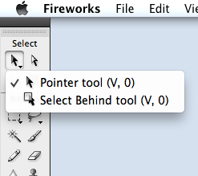

Menus Acoplados |
Barra de Ferramentas |
Pointer Tool |
|---|---|---|
 |
 | |
| A partir da versão MX 2004, o Fireworks passou a exibir os menus de ferramentas mais organizados, acoplados. Eles podem ser ocultados e suspensos trazendo uma área de trabalho imediata mais limpa. | A barra de ferramentas contém 34 botões. Sendo deles, alguns com mini-menus que oferecem variações da ferramenta, chegando a marca de 68 itens. |
|
Outros Recursos |
|||
|---|---|---|---|
 |
 |
 |
|
| Suporte a CSS | Criação de entidades gráficas CSS | Camadas de tema do jQuery Mobile | Acesso à API |